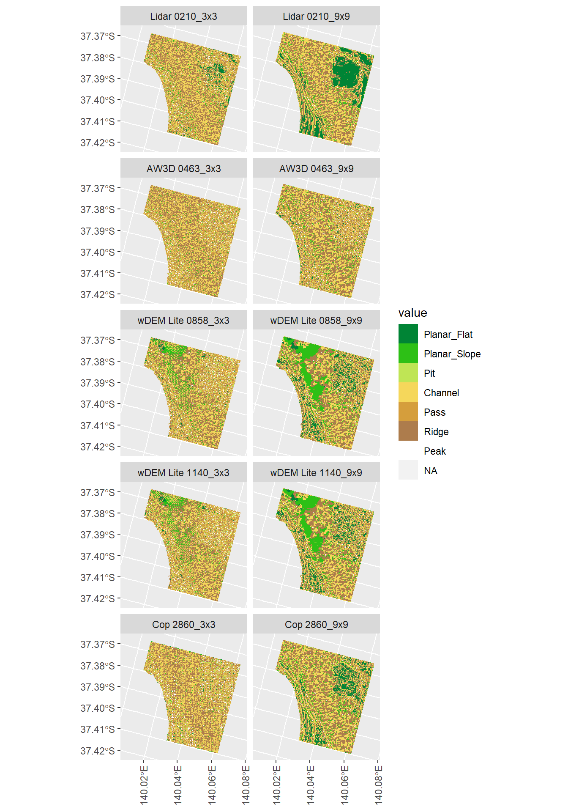

5 Categorical
Table 5.1 shows the proportion of each DEM classifed to each landform element (also see Figure 5.2.
Figure 5.1 shows a landscape classification for each reprojected sample area and window size.
| short | res_metres | window | values | Planar_Flat | Planar_Slope | Pit | Channel | Pass | Ridge | Peak |
|---|---|---|---|---|---|---|---|---|---|---|
| Lidar 0210 | 2.1 | 3x3 | 9727 | 0.03609 | 0.034 | 0.044 | 0.37 | 0.121 | 0.36 | 0.034 |
| Lidar 0210 | 2.1 | 9x9 | 9727 | 0.18361 | 0.057 | 0.010 | 0.35 | 0.047 | 0.34 | 0.012 |
| AW3D 0463 | 4.6 | 3x3 | 9727 | 0.00021 | 0.035 | 0.054 | 0.34 | 0.159 | 0.36 | 0.053 |
| AW3D 0463 | 4.6 | 9x9 | 9727 | 0.01573 | 0.056 | 0.045 | 0.34 | 0.156 | 0.35 | 0.044 |
| wDEM Lite 0858 | 11.4 | 3x3 | 9727 | 0.01717 | 0.090 | 0.055 | 0.30 | 0.168 | 0.32 | 0.049 |
| wDEM Lite 0858 | 11.4 | 9x9 | 9727 | 0.09828 | 0.157 | 0.020 | 0.31 | 0.072 | 0.32 | 0.017 |
| wDEM Lite 1140 | 8.6 | 3x3 | 9727 | 0.01419 | 0.086 | 0.058 | 0.31 | 0.170 | 0.31 | 0.053 |
| wDEM Lite 1140 | 8.6 | 9x9 | 9727 | 0.09294 | 0.158 | 0.020 | 0.31 | 0.077 | 0.32 | 0.018 |
| Cop 2860 | 28.6 | 3x3 | 9727 | 0.00966 | 0.019 | 0.068 | 0.32 | 0.173 | 0.34 | 0.067 |
| Cop 2860 | 28.6 | 9x9 | 9727 | 0.11175 | 0.075 | 0.019 | 0.37 | 0.064 | 0.35 | 0.015 |

Figure 5.1: Categorical representation of the sample area based on the repr DEM

Figure 5.2: Proportion of categorised sample area in each of several classification classes
Ilich, Alexander R., Benjamin Misiuk, Vincent Lecours, and Steven A. Murawski. 2021. “MultiscaleDTM.” https://doi.org/10.5281/zenodo.5548338.
———. 2023. “MultiscaleDTM: An Open-Source r Package for Multiscale Geomorphometric Analysis.” Transactions in GIS 27 (4). https://doi.org/10.1111/tgis.13067.
Ilich, Alexander, Vincent Lecours, Benjamin Misiuk, and Steven Murawski. 2023. MultiscaleDTM: Multi-Scale Geomorphometric Terrain Attributes. https://CRAN.R-project.org/package=MultiscaleDTM.